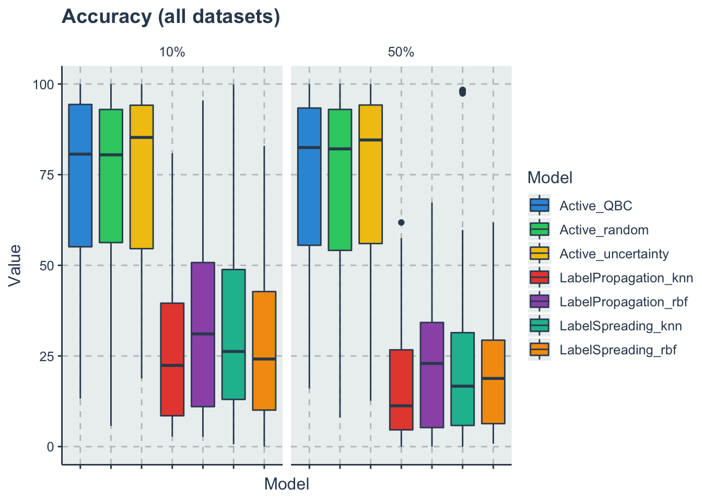
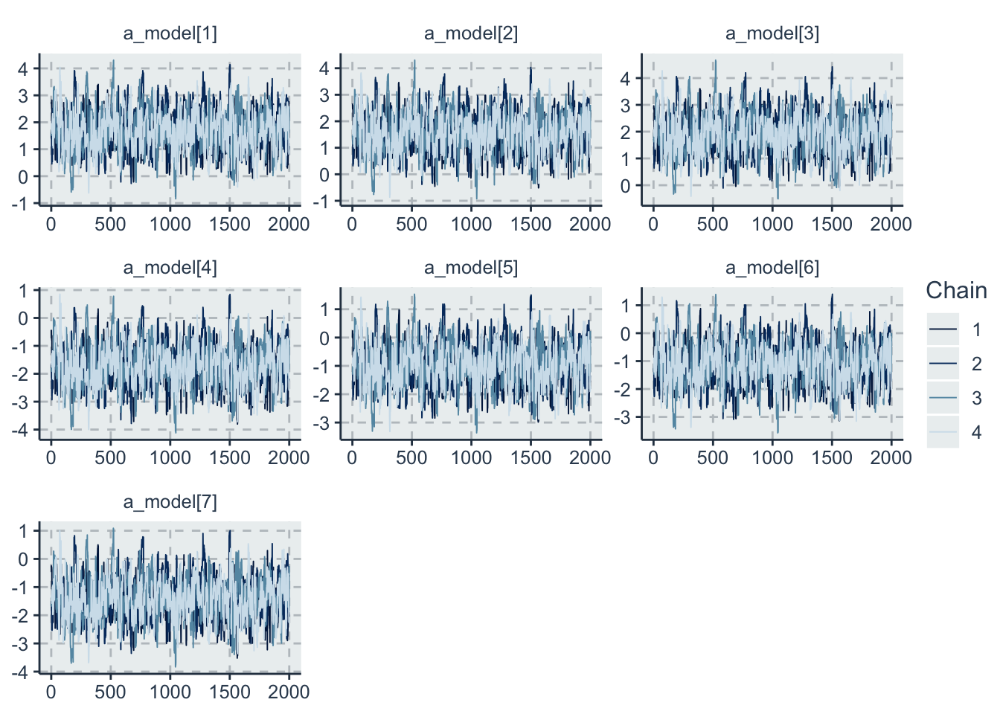
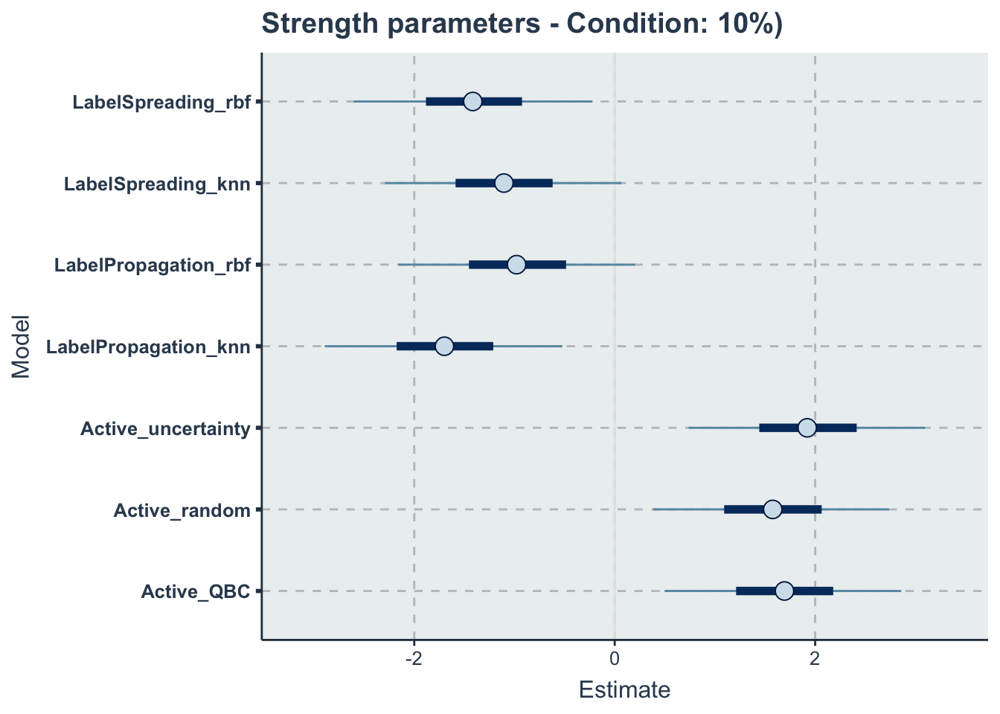
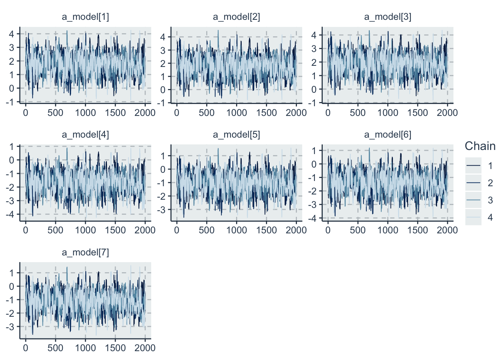
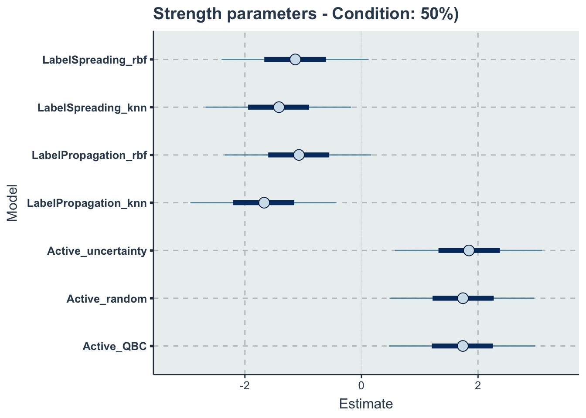

Chapter 2 RQ2
How do the rank of these algorithms change with changes in the amount of manual label effort prior to applying these methods?
d <- read_csv('./data/full_data.csv') %>%
dplyr::rename(Value='value') %>%
select(-X1)
d10 <- dplyr::filter(d,Variable=='10%')
d50 <- dplyr::filter(d,Variable=='50%')2.1 Descriptive statistics
p<-ggplot(data=d, aes(x=Model, y=Value, fill=Model))+
geom_boxplot()+
theme(axis.text.x = element_blank())+ #remove the x labels
facet_wrap(~Variable)+
labs(title = 'Accuracy (all datasets)')
p
save_fig(p,'aggregatedmanualeffortboxplots.pdf')A respective table for this box-plot but with 5% and 95% quantiles
d %>%
dplyr::group_by(Variable,Model) %>%
summarise(Mean = mean(Value),
SD = sd(Value),
Median = median(Value),
'5%' = quantile(Value,0.05),
'95%' = quantile(Value,0.95)) %>%
dplyr::ungroup() %>%
dplyr::select(-Variable) %>%
kable(
"latex",
table.envir = 'table',
caption='Summary statistics for the accuracy aggregated data',
booktabs=T,
label='summarystatisticstable',
format.args = list(scientific = FALSE),
digits = 3,
linesep = "") %>%
pack_rows("10% labels available",1, n_models) %>%
pack_rows("50% labels available",1+n_models,2*n_models) %>%
kable_styling(latex_options = c("hold_position"),
full_width = F) %>%
readr::write_lines('./paper/summarystatisticstablemanualeffort.tex')2.2 Bradley terry model for ranking
To create a Bradley terry model we need first to transform our dataset to paired comparisons On each iteration for each dataset for each variable we will rank the models based on the Value of the accuracy (lower accuracy -> smaller) After we expand it to wide so we can compare each algorithm with each other and create a BT dataset
d_acc_rank_10 <- d10 %>%
dplyr::group_by(Dataset, Variable, Iteration) %>%
dplyr::mutate(Rank=-rank(Value, ties.method = 'random')) %>%
dplyr::ungroup() %>%
dplyr::select(-Value) %>% #we need to drop the Value variable to pivot wider
tidyr::pivot_wider(names_from = Model,
values_from=Rank)
d_acc_rank_50 <- d50 %>%
dplyr::group_by(Dataset, Variable, Iteration) %>%
dplyr::mutate(Rank=-rank(Value, ties.method = 'random')) %>%
dplyr::ungroup() %>%
dplyr::select(-Value) %>% #we need to drop the Value variable to pivot wider
tidyr::pivot_wider(names_from = Model,
values_from=Rank)Now we can create the BT dataset
#a vector with the name of the algorithms
models <- get_index_names_as_array(d$Model)
n_models = length(models)
comb <- gtools::combinations(n=n_models, r=2, v=seq(1:n_models), repeats.allowed = F) #all teh paired combinations
d_acc_bt_10 <- dplyr::tribble(~model0_name, ~model0, ~model1_name, ~model1, ~y, ~Iteration, ~Dataset, ~DataType)
d_acc_bt_50 <- dplyr::tribble(~model0_name, ~model0, ~model1_name, ~model1, ~y, ~Iteration, ~Dataset, ~DataType)#now we loop each row of the rank wide dataset and create a new one
for(i in 1:nrow(d_acc_rank_10))
{
current_row <- d_acc_rank_10[i,]
for(j in 1:nrow(comb)){
comb_row <- comb[j,]
model0_name <- models[comb_row[1]]
model0 <- comb_row[1]
model0_rank <- current_row[[1,model0_name]]
model1_name <- models[comb_row[2]]
model1 <- comb_row[2]
model1_rank <- current_row[[1,model1_name]]
diff_rank <- model1_rank - model0_rank
#SInce higher accuracy is better if model 1 rank- model 0 rank is positive than model1 wins and y=1 else y=0
y <- ifelse(diff_rank>0, 1, 0)
d_acc_bt_10 <-d_acc_bt_10 %>%
add_row(model0_name=model0_name,
model0=model0,
model1_name=model1_name,
model1=model1,
y=y,
Iteration=current_row$Iteration,
Dataset=current_row$Dataset,
DataType=current_row$DataType)
}
}#now we loop each row of the rank wide dataset and create a new one
for(i in 1:nrow(d_acc_rank_50))
{
current_row <- d_acc_rank_50[i,]
for(j in 1:nrow(comb)){
comb_row <- comb[j,]
model0_name <- models[comb_row[1]]
model0 <- comb_row[1]
model0_rank <- current_row[[1,model0_name]]
model1_name <- models[comb_row[2]]
model1 <- comb_row[2]
model1_rank <- current_row[[1,model1_name]]
diff_rank <- model1_rank - model0_rank
#SInce higher accuracy is better if model 1 rank- model 0 rank is positive than model1 wins and y=1 else y=0
y <- ifelse(diff_rank>0, 1, 0)
d_acc_bt_50 <-d_acc_bt_50 %>%
add_row(model0_name=model0_name,
model0=model0,
model1_name=model1_name,
model1=model1,
y=y,
Iteration=current_row$Iteration,
Dataset=current_row$Dataset,
DataType=current_row$DataType)
}
}m10_data <- list(
N_total=nrow(d_acc_bt_10),
y = as.integer(d_acc_bt_10$y),
N_models = as.integer(n_models),
model0=as.integer(d_acc_bt_10$model0),
model1=as.integer(d_acc_bt_10$model1)
)m50_data <- list(
N_total=nrow(d_acc_bt_50),
y = as.integer(d_acc_bt_50$y),
N_models = as.integer(n_models),
model0=as.integer(d_acc_bt_50$model0),
model1=as.integer(d_acc_bt_50$model1)
)we use the same model but with different data
model <- cmdstanr::cmdstan_model(stan_file = './models/rankingmodel.stan')
m10_fit <- model$sample(
data = m10_data,
chains = 4,
iter = 2000,
iter_warmup = 200,
parallel_chains = 4,
seed = 3103,
)
m50_fit <- model$sample(
data = m50_data,
chains = 4,
iter = 2000,
iter_warmup = 200,
parallel_chains = 4,
seed = 3103,
)
m10_fit$save_object(file = "./data/m10_fit.RDS")
m50_fit$save_object(file = "./data/m50_fit.RDS")2.3 Results for 10%
m10_fit <-readRDS("./data/m10_fit.RDS")
a_model <- c("a_model[1]",
"a_model[2]",
"a_model[3]",
"a_model[4]",
"a_model[5]",
"a_model[6]",
"a_model[7]")
draws_a10 <- posterior::as_draws(m10_fit$draws(variables = a_model))Basic diagnostics
bayesplot::mcmc_trace(draws_a10, pars=a_model)
m10_fit$cmdstan_diagnose()Processing csv files: /var/folders/mc/9k42tql17jdbmkzpdp5bgwph0000gp/T/RtmpsiNBkA/rankingmodel-202105270844-1-063998.csv, /var/folders/mc/9k42tql17jdbmkzpdp5bgwph0000gp/T/RtmpsiNBkA/rankingmodel-202105270844-2-063998.csv, /var/folders/mc/9k42tql17jdbmkzpdp5bgwph0000gp/T/RtmpsiNBkA/rankingmodel-202105270844-3-063998.csv, /var/folders/mc/9k42tql17jdbmkzpdp5bgwph0000gp/T/RtmpsiNBkA/rankingmodel-202105270844-4-063998.csv
Checking sampler transitions treedepth.
Treedepth satisfactory for all transitions.
Checking sampler transitions for divergences.
No divergent transitions found.
Checking E-BFMI - sampler transitions HMC potential energy.
E-BFMI satisfactory for all transitions.
Effective sample size satisfactory.
Split R-hat values satisfactory all parameters.
Processing complete, no problems detected.p<-mcmc_intervals(draws_a10) +
scale_y_discrete(labels=models)+
labs(x='Estimate',
y='Model',
title='Strength parameters - Condition: 10%)')
p
save_fig(p,'strength-10.pdf')Here we are extracting all samples and ranking them to have a distribution of the ranks
posterior_df <- as.data.frame(posterior::as_draws_df(m10_fit$draws(variables = a_model)))[,1:n_models]
colnames(posterior_df) <- models
#sampling from the posterior
s <- dplyr::sample_n(posterior_df, size = 1000, replace=T)
s <- dplyr::mutate(s, rown = row_number())
wide_s <- tidyr::pivot_longer(s, cols=all_of(models), names_to = "Models", values_to = "a_model")
rank_df <- wide_s %>%
dplyr::group_by(rown) %>%
dplyr::mutate(Rank = rank(-a_model, ties.method = 'random')) %>%
dplyr::ungroup() %>%
dplyr::select(-a_model) %>%
dplyr::group_by(Models) %>%
dplyr::summarise(MedianRank = median(Rank),
VarianceRank = var(Rank)) %>%
dplyr::arrange(MedianRank)rank_df_table <- rank_df
colnames(rank_df_table) <- c("Models","Median Rank", "Variance of the Rank")
kable(rank_df_table, "html") %>%
kable_styling(bootstrap_options = c('striped',"hover", "condensed" ))| Models | Median Rank | Variance of the Rank |
|---|---|---|
| Active_uncertainty | 1 | 0.0546537 |
| Active_QBC | 2 | 0.2213253 |
| Active_random | 3 | 0.1738048 |
| LabelPropagation_rbf | 4 | 0.1154264 |
| LabelSpreading_knn | 5 | 0.1242482 |
| LabelSpreading_rbf | 6 | 0.0258819 |
| LabelPropagation_knn | 7 | 0.0186577 |
Saving the table to latex
rank_df_table %>%
kable(
"latex",
table.envir = 'table',
caption='Ranking of the algorithms with 10% of available labels',
booktabs=T,
label='ranking10',
format.args = list(scientific = FALSE),
digits = 3,
linesep = "") %>%
kable_styling(latex_options = c("hold_position"),
full_width = F) %>%
readr::write_lines('./paper/ranking10.tex')2.4 Results for 50%
m50_fit <-readRDS("./data/m50_fit.RDS")
a_model <- c("a_model[1]",
"a_model[2]",
"a_model[3]",
"a_model[4]",
"a_model[5]",
"a_model[6]",
"a_model[7]")
draws_a50 <- posterior::as_draws(m50_fit$draws(variables = a_model))Basic diagnostics
bayesplot::mcmc_trace(draws_a50, pars=a_model)
m50_fit$cmdstan_diagnose()Processing csv files: /var/folders/mc/9k42tql17jdbmkzpdp5bgwph0000gp/T/RtmpsiNBkA/rankingmodel-202105270835-1-4e8263.csv, /var/folders/mc/9k42tql17jdbmkzpdp5bgwph0000gp/T/RtmpsiNBkA/rankingmodel-202105270835-2-4e8263.csv, /var/folders/mc/9k42tql17jdbmkzpdp5bgwph0000gp/T/RtmpsiNBkA/rankingmodel-202105270835-3-4e8263.csv, /var/folders/mc/9k42tql17jdbmkzpdp5bgwph0000gp/T/RtmpsiNBkA/rankingmodel-202105270835-4-4e8263.csv
Checking sampler transitions treedepth.
Treedepth satisfactory for all transitions.
Checking sampler transitions for divergences.
No divergent transitions found.
Checking E-BFMI - sampler transitions HMC potential energy.
E-BFMI satisfactory for all transitions.
Effective sample size satisfactory.
Split R-hat values satisfactory all parameters.
Processing complete, no problems detected.p<-mcmc_intervals(draws_a50) +
scale_y_discrete(labels=models)+
labs(x='Estimate',
y='Model',
title='Strength parameters - Condition: 50%)')
p
save_fig(p,'strength-50.pdf')Here we are extracting all samples and ranking them to have a distribution of the ranks
posterior_df <- as.data.frame(posterior::as_draws_df(m50_fit$draws(variables = a_model)))[,1:n_models]
colnames(posterior_df) <- models
#sampling from the posterior
s <- dplyr::sample_n(posterior_df, size = 1000, replace=T)
s <- dplyr::mutate(s, rown = row_number())
wide_s <- tidyr::pivot_longer(s, cols=all_of(models), names_to = "Models", values_to = "a_model")
rank_df <- wide_s %>%
dplyr::group_by(rown) %>%
dplyr::mutate(Rank = rank(-a_model, ties.method = 'random')) %>%
dplyr::ungroup() %>%
dplyr::select(-a_model) %>%
dplyr::group_by(Models) %>%
dplyr::summarise(MedianRank = median(Rank),
VarianceRank = var(Rank)) %>%
dplyr::arrange(MedianRank)rank_df_table <- rank_df
colnames(rank_df_table) <- c("Models","Median Rank", "Variance of the Rank")
kable(rank_df_table, "html") %>%
kable_styling(bootstrap_options = c('striped',"hover", "condensed" ))| Models | Median Rank | Variance of the Rank |
|---|---|---|
| Active_uncertainty | 1 | 0.4909700 |
| Active_QBC | 2 | 0.5273183 |
| Active_random | 2 | 0.5459820 |
| LabelPropagation_rbf | 4 | 0.2064104 |
| LabelSpreading_rbf | 5 | 0.2164875 |
| LabelSpreading_knn | 6 | 0.0424174 |
| LabelPropagation_knn | 7 | 0.0328769 |
saving the table to latex
rank_df_table %>%
kable(
"latex",
table.envir = 'table',
caption='Ranking of the algorithms with 50% of available labels',
booktabs=T,
label='ranking10',
format.args = list(scientific = FALSE),
digits = 3,
linesep = "") %>%
kable_styling(latex_options = c("hold_position"),
full_width = F) %>%
readr::write_lines('./paper/ranking50.tex')